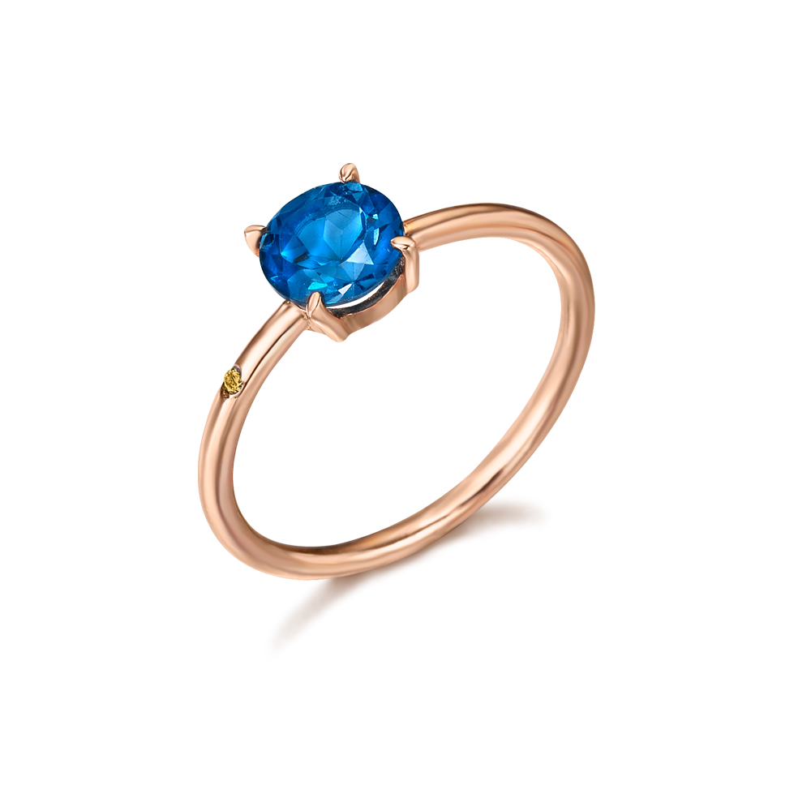

Anillo elaborado en Oro rosa de 18 quilates, el cual va compuesto por un Topacio London Blue central montado sobre garras, y en el lateral de su aro, lleva incrustado un pequeño Brillante Brown de 0,004 quilates.
Precio: $4265.44
Color: Oro rosado/Azul
Metal: Oro Rosa
Peso del diamante: 0,004 quilates
Comprar